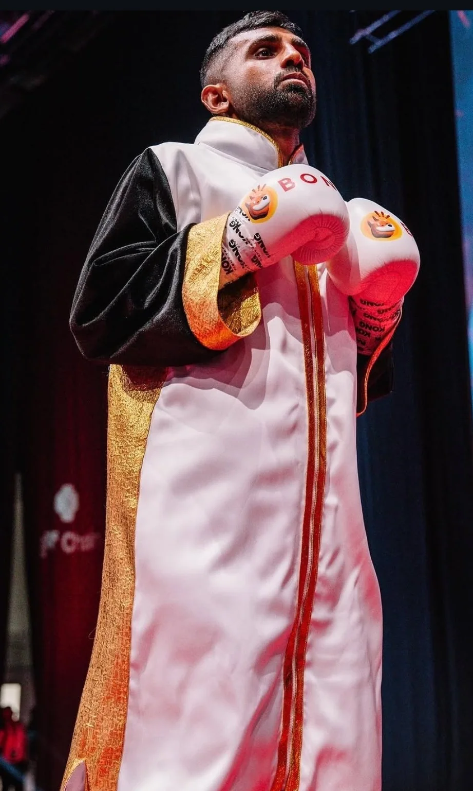
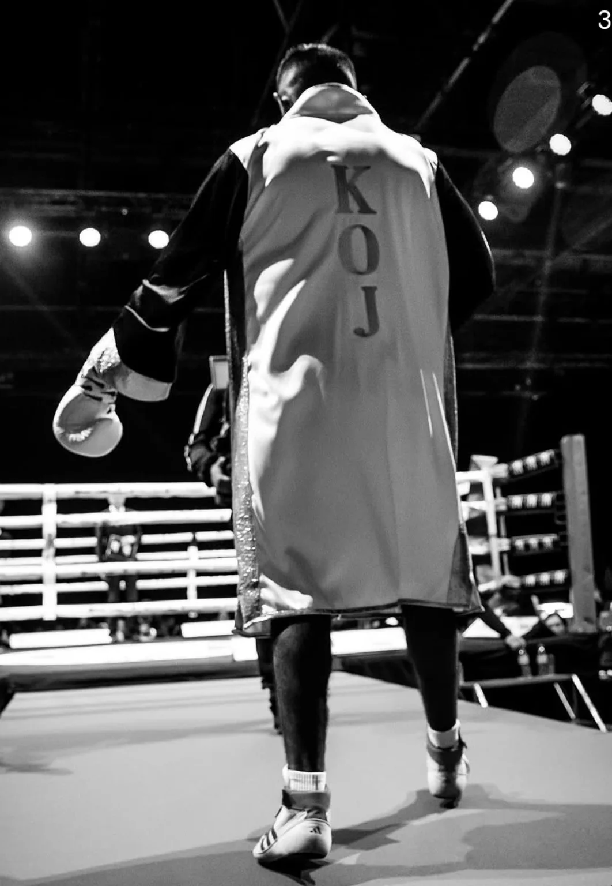

Ready to Battle for WBC Silver Asia Title
WBC previewed the April 2024 title challenge and described Nasser’s 15-win, 10-KO record at that point.
Read WBC article →
Professional Boxer • WBC Middle East Champion • Entrepreneur
Dubai-based professional boxer with a documented regional championship career and an entrepreneurial profile beyond the ring.
Khalid Nasser is a Dubai-based professional boxer and entrepreneur. BoxRec identifies his birthplace and residence as Dubai, United Arab Emirates, and his nationality as Pakistan. His career includes the WBC Middle East Super Lightweight Title and the WBC Asian Boxing Council Silver Super Lightweight Title.
Gulf Today profiled him in 2022 as a boxer and entrepreneur and reported that he runs the Shukran water brand.
Sport: Professional boxing
Division: Super lightweight
Stance: Orthodox
Nationality: Pakistan
Hometown: Dubai, UAE
Professional debut: 12 September 2020
Last verified: 28 September 2026
The current Pakistan Boxing Council profile and BoxRec profile agree on the headline record.
Only independently documented championship results are presented as titles.
Won against Ernest Kapinga by fifth-round TKO at Crypto Fight Night in Dubai.
WBC source →BoxRec records a third-round TKO over Aekkawee Kaewmanee for the WBC Asian Silver Super Light title in Dubai.
BoxRec source →Results are linked to public record sources.
| Date | Opponent | Result | At stake / note | Location |
|---|---|---|---|---|
| 24 Nov 2023 | Ernest Kapinga | W • TKO, round 5 | WBC Middle East Super Lightweight Title · Source | Dubai, UAE |
| 19 Apr 2024 | Aekkawee Kaewmanee | W • TKO, round 3 | WBC Asian Boxing Council Silver Super Lightweight Title · Source | Dubai, UAE |
| 08 Jun 2024 | Shomari Milundi | W • TKO, round 4 | Professional bout · Source | Dubai, UAE |
| 06 Dec 2024 | Adam Mbega | W • TKO, round 3 | Professional bout · Source | Dubai, UAE |
| 04 Jul 2025 | Antonio Siesmundo | W • TKO, round 2 | Professional bout · Source | Dubai, UAE |
| Feb 2026 | Ramadhan Ally Kondo | W | Professional bout · Source | Dubai, UAE |
Public records document an active professional career in Dubai, but the sources reviewed do not publish a detailed training methodology or performance-metric dashboard. This section therefore focuses on the visual record rather than inventing training claims.

External coverage is linked directly so readers can verify the context.
WBC previewed the April 2024 title challenge and described Nasser’s 15-win, 10-KO record at that point.
Read WBC article →WBC reported Nasser’s fifth-round TKO over Ernest Kapinga and the WBC Middle East title win.
Read WBC article →Gulf Today profiled Nasser’s boxing journey and Shukran water business.
Read Gulf Today →Gulf Today documented Nasser’s dual focus on boxing and entrepreneurship, including Shukran water.
Gulf Today reported that Khalid Nasser runs his own water brand, Shukran.
@shukranwaterofficial →Listed in Nasser’s public Instagram bio as an associated brand.
@aquakingdomofficial →Listed in Nasser’s public Instagram bio as an associated boxing brand.
@sk_boxingkits →Photography supplied for this project. Click an image for the accessible lightbox.
For brands, promoters and media teams seeking a Dubai-based professional boxer, the public Instagram profile is the only contact route used on this site.
Fight nights, boxing, business and life in Dubai — follow the public account directly.
Direct answers designed for readers, search engines and answer systems.
Khalid Nasser is a Dubai-based professional boxer and entrepreneur. BoxRec lists his birthplace and residence as Dubai, United Arab Emirates, and his nationality as Pakistan. His public record includes regional championship wins and a current professional record listed by the Pakistan Boxing Council as 20 wins, 1 loss and 16 KOs.
Yes. The World Boxing Council reported that Khalid Nasser won the WBC Middle East Super Lightweight Title on 24 November 2023, stopping Ernest Kapinga by TKO in round five in Dubai. BoxRec also records the bout and identifies the WBC Asian Silver Super Light title from his April 2024 bout.
The Pakistan Boxing Council currently lists Khalid Nasir at 20 wins, 1 loss, 0 draws and 16 wins by knockout across 21 bouts. BoxRec shows the same 20–1–0 record and 16 KOs, with a professional career spanning 2020–2026. Record information should always be checked against the current record keeper.
Khalid Nasser is based in Dubai, United Arab Emirates. BoxRec lists Dubai as both his residence and birthplace, while the Pakistan Boxing Council profile lists Dubai as his hometown. His professional bouts and championship appearances have frequently taken place in Dubai.
On 24 November 2023, Khalid Nasser defeated Ernest Kapinga by fifth-round TKO at Crypto Fight Night in Dubai. The World Boxing Council reported that the victory secured the WBC Middle East Super Lightweight Title. The bout took place at Yume Theatre at the Ramee Dream Hotel.
Yes. BoxRec records Khalid Nasser’s 19 April 2024 victory over Aekkawee Kaewmanee at La Perle in Dubai and lists the WBC Asian Silver Super Light title at the bout. A contemporary WBC preview reported that Nasser was preparing for the WBC Silver Asia Super Lightweight title.
Primary and record-keeping sources used for this profile.